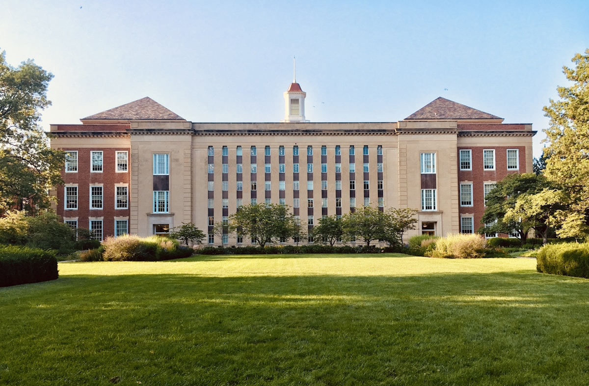
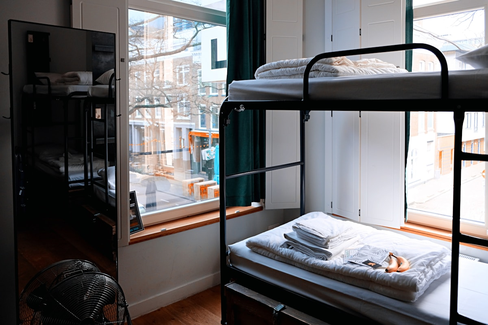
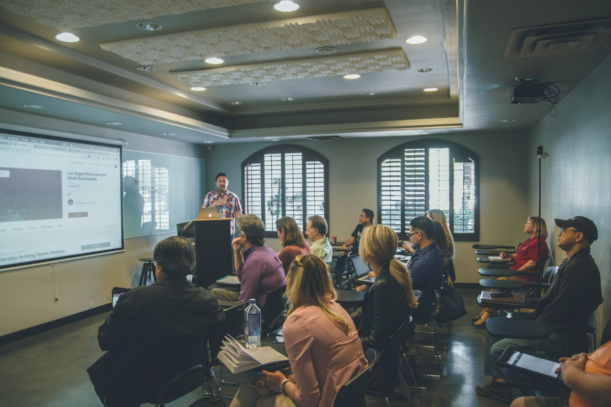

Computer Science
& Engineering
Code, systems, data and the ideas that power the digital world.
Women who shape tomorrow
A vibrant engineering community where curiosity becomes capability, and every student gets the space to lead.

Sumathi Reddy Institute of Technology for Women is an engineering college built around possibility. Here, a supportive community meets rigorous technical learning, helping young women find their voice and make it count.
Meet campus life →Choose a discipline, then take it further through labs, clubs, projects and conversations that connect the classroom to the world.
Code, systems, data and the ideas that power the digital world.
Turn complex information into useful, human-centred solutions.
Explore circuits, communication and the connected future.
Build the energy systems that keep a changing world moving.
Explore the places that make SRITW feel like more than a classroom: open grounds, focused study corners, a welcoming hostel and technology-ready learning spaces.



Understand the admission journey, tuition structure and available support before you begin.
Enquire about fees ↗Fee details can vary by programme and admission category. Contact the admissions team for the current schedule.Find your people in technical clubs, cultural events, sports and the annual college fest.
See what’s happening →Career guidance, skill-building and industry interaction help students move from campus confidence to career momentum.
Explore opportunities ↗Have questions about courses, hostel, fees or admissions? The SRITW team is ready to help.
Admissions desk
admissions@sritw.org ↗Visit the campus
Sumathi Reddy Institute of Technology for Women